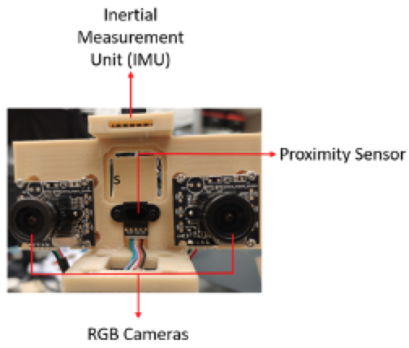
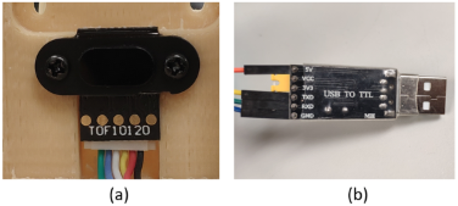
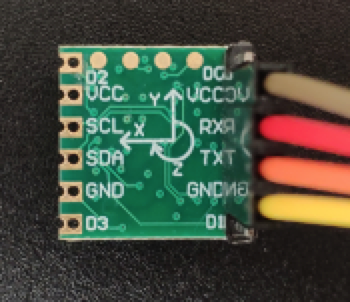

Following the instruction, you will learn how to open an RGB camera, how to read and save a picture, and how a specific color is selected and extracted.
Open “Motor” folder
Practice 1:
Run "servoMotorControl.py"
Input an angle (0-180) for the motor, then observe the motion of the robot.
Press "q" to quit.
Practice 2:
Run 3DOF.py
Press a key to execute the corresponding action:
'w': forward
's': backward
'a': left
'd': right
'j': look down
'k': look up
'l': input an angle to move along a line (51.85-90)
'p': control the end effector to move to a certain coordinate
Press "q" to quit.
Visual tracking
In this section, you will learn the basic knowledge about camera calibration, and calibrate two cameras by yourself.
Open “Aruco” folder
Run "ArucoTracking.py"
Slowly move the Aruco code to observe the motion of the end effector.
Proximity Based Control
In this section, you will learn how to use the feedback data from a proximity sensor to control the robot.
Proximity sensors detect the presence of nearby objects without any physical contact. The type of proximity sensor installed on the Mingo platform is a laser rangefinder, also known as a laser telemeter, which uses a laser beam to determine the distance to an object.

Check if the proximity sensor is connected to the “USB-TTL” connector. If not, connect them according to the following instructions.

For the proximity sensor, it uses 4 ports to transfer data. From right to left in Figure (a), we denote them by “GND”, “VDD”, “RXD”, and “TXD” (Connected to the black, red, yellow, and white lines in Figure (a)).
For the “USB to TTL connector”, it also uses 4 ports to receive data. From up to down in Figure (b), we denote them by “VCC”, “TXD”, “RXD”, and “GND” (Connected to the orange, yellow, green and blue lines in Figure (b)).
Connect the proximity sensor and the “USB to TTL connector” ports according to the following correspondence table.
Proximity Sensor
USB to TTL Connector
White
RXD
Yellow
TXD
Red
5V
Black
GND
Open the “proximity” folder and run “proximity_uart.py” to test the performance of the proximity sensor.
Put an object in the front of the proximity sensor, see the printed change of the distance.
Run “motor_proximity.py”, put an object in the front of the proximity sensor, and vary its position.
IMU Based Control
In this section, you will learn how to use the feedback data from an IMU sensor to control the robot.
IMU measures a body's specific force, angular rate, and sometimes the orientation of the body using a combination of accelerometers, gyroscopes, and sometimes magnetometers. The IMU output the rotation angles of the Mingo’s configuration.
Disconnect the proximity sensor and the TTL-USB connector. Connect the IMU to the TTL-USB connector according to the following instructions.

IMU uses 4 ports to transfer data. From up to down in the Figure, we denote them by “VCC”, “RXD”, “TXD”, and “GND”.
Connect IMU and the “USB to TTL connector” ports according to the following correspondence table.
Proximity Sensor
USB to TTL Connector
White
RXD
Yellow
TXD
Red
5V
Black
GND
Open the “IMU” folder and run “IMU.py” to test the performance of the IMU. Try to rotate the platform in three directions and check the change of the printed result.
Run “IMUControl.py”, try to rotate the platform in three directions.